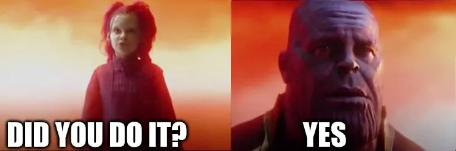

It Is Done

I did it. I nuked my Mastodon account. I’m not going to go over why, as I already kinda did in another post. But now, it’s done.
I might go back some day, but for now, I’m going to focus a lot on my blog. I have some big posts in the works, and not just the ones I talked about in my upcoming flights post. Yes one of them is about flying. Not about me flying, but about how flying isn’t that hard, or stressful.
I’m looking forward to posting that, as I am for what this blog first mindset will bring. It will be a while before that post drops. I need to get some more airport photos. Good thing I have… seven, upcoming flights. Yay.